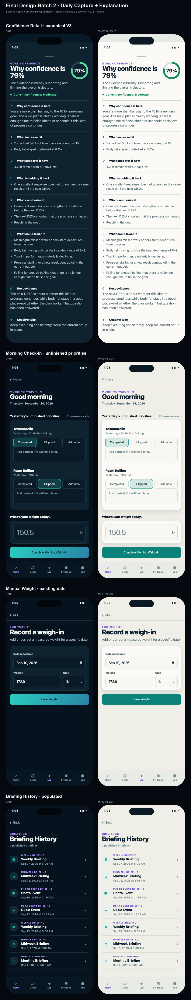
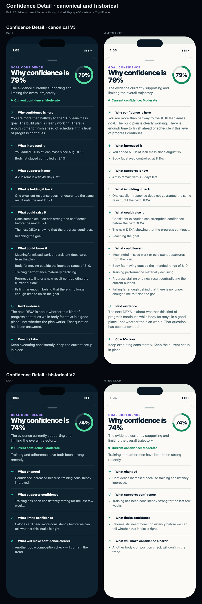

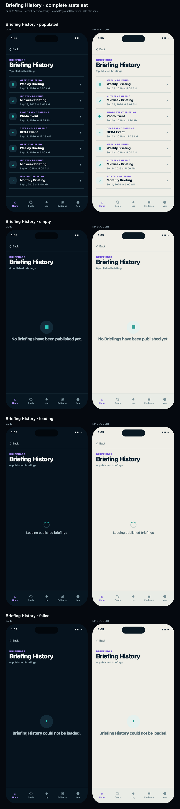

Final Design Batch 2
Daily Capture + Explanation · dark and Mineral Light · 402 pt iPhone. Batch 1 and all previously accepted families remain locked.
Primary review

Confidence Detail

Morning Check-In + manual weight

Briefing History
